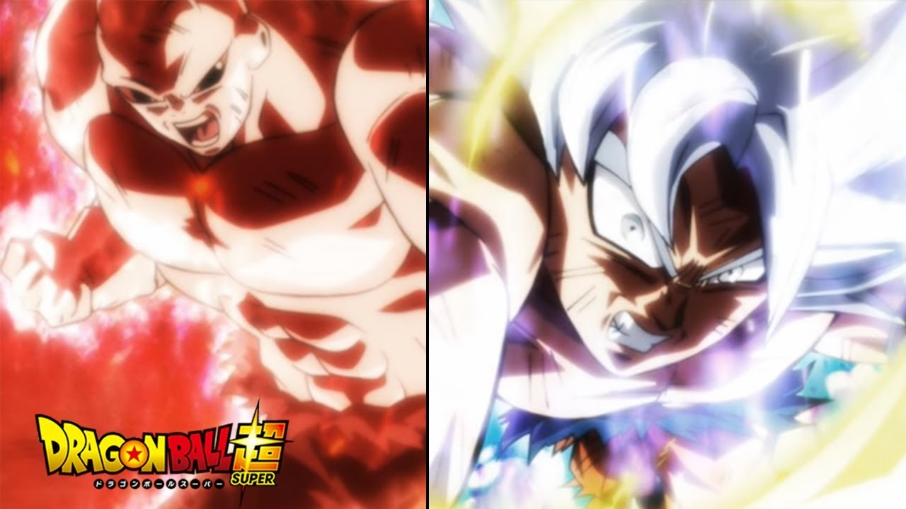
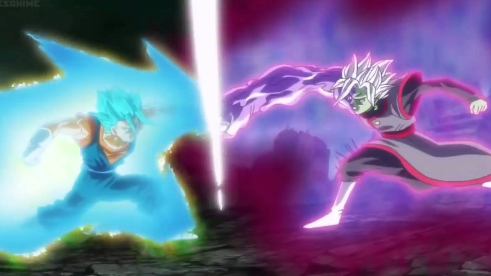
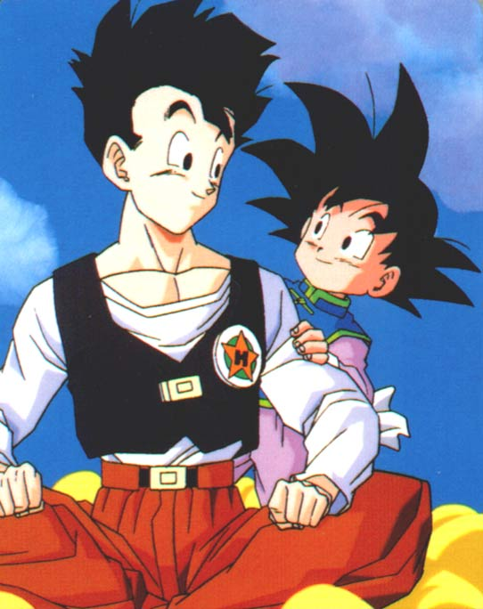

My topic is about a charcter from the Dragon Ball anime series. Son Goku, born Kakarot, is a male Saiyan and the main protagonist of the Dragon Ball series created by Akira Toriyama. Goku is a Saiyan originally sent to Earth as an infant with the mission to destroy it, an accident alters his memory, allowing him to grow up to become Earth's greatest defender, as well as the informal leader of the Dragon Team.
One fact is that Goku achieves this state by breaking his "self-limiting shells" and tapping into the deeper potential within. This state while initially increasing his capabilities vastly more than even the X20 Super Saiyan Blue Kaio-ken, the equally augmented mental parameters allows him to quickly and noticeably imprint on the battle without really thinking about it. In addition to the instinctive fighting style, the Ultra Instinct -Sign- state seems to have a unique effect on Goku's Saiyan Power ability, allowing him to steadily evolve his power and efficiency with each exchange as he continues to fight an opponent of rivaling or greater power.
Another fact is that Vegito, called Vegerot in the Viz English manga, is the immensely powerful result of the fusion between Goku and Vegeta by the use of the Potara Earrings. Vegito is the most powerful character in the Dragon Ball manga. His Fusion Dance counterpart is Gogeta. He was absorbed by Super Buu in the Fusion Saga, and defused back into Vegeta and Goku.
Another fact about Goku is that he has 2 sons named goten and gohan. Even though he was senmt to earth from Planet Vegeta to destroy earth, he married a young earthling named chi-chi. He had 2 strong and powerful sons full with kindness.